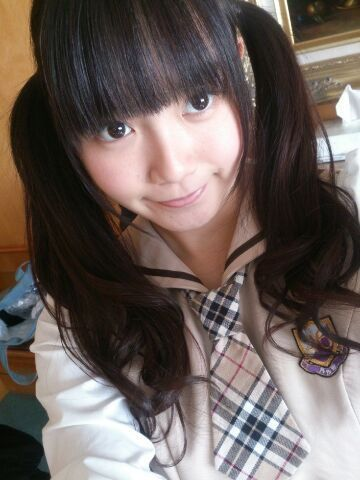
にたにたにたにた、ひめたん
あっそうそう
横アリ一回も転ばなかったよ( ´ ▽ ` )！
とゆーか今回は
ステージの作り上
転ぶような段差がなかったかな(笑)
組閣......
うーんそうだなあ
ひめたんはどうやら飲み込むのに
時間がかかる子なのであれだけども
うーん何言えばいいかわかんない！
ごめんね？
何も考えてないわけじゃなかいんだ
ただ、ぶきっちょなとこあるからさー
とりあえずひめたんは今まで通り
がんばっていきます(ノ)ω(ヾ)
いや、まだまだ足りないんだよね
もっとがんばります！
今までよりも、もっともっと！
らんらん(寺田蘭世ちゃん)の妹ちゃんとね
お話しちゃったー♪
代々木ライブ以来かな？姉妹そろってかあゆす
写メも撮ったよー( _´ω`)_
またライブおいでーね

そしてまたお話しましょっ
あ、これは余談だけども
ライブの前日ホテルにお泊まりだったのね
それでねーその日は
みりりん(渡辺みり愛ちゃん)と
ツイン部屋だったのー♪
２期生ちゃんとお泊まりしたの
はじめてだったのね
みりりんとでよかったーヽ(〃∀〃)ノ
またお泊まりしよーねっ
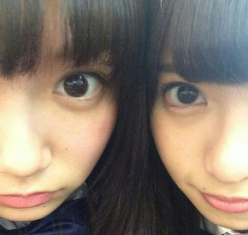
近！
今日ね、
文集を先生がコピーして
製本したのよ
そしたらねひめたんね
なんとね
タイトルを忘れてたみたいヽ(；▽；)ノ
最初の一行白紙なんて
やー恥ずかしいどうしようヽ(；▽；)ノ
結構まじめな文集書いたのにー
やめてーみんな読まないでー......

 女の子はきゅんきゅん王国の何ー？
女の子はきゅんきゅん王国の何ー？お姫さまかなーそれとも王子様かなー
どっちがいーい？
メイドさんでもいいよー(＊^ω^＊)
ってかひめたんメイドさんやりたーいっ
トマトとやまとまとどっちがすきー？やまとまと(即答)
だから！ひめたんの推しメンやねん！
ひめたん、いつも見ると、
ワンピースやスカートだけど、
パンツとかはくときもあるの？？？ほっとんど持ってないですねー
空飛ぶ個人PVで
パンツスタイルで来てーって言われて
慌てて買いにゆきました(´・ω・｀)
僕もきゅんきゅん王国の
お姫様になりたいのですが
どうしたらいいですか?(20代 男)うーん難しい質問だなあ
一緒にがんばろ？
夢は叶えるものって言葉は別に信じてないけど
そーゆーことだよ？
ひめたんとじゅうたんの違いは、
なんとなく理解できました。
ですが、ひめたんとポリウレタンの違いが、
まだわかりません。どうか教えてください。ちょっと待ってください
お願いだから、どうかお願いだから
ポリウレタンはとりあ端っこに置いといて
ひめたんとじゅうたんの違いを
完璧に理解してくださいませんかね
一生のお願いです...どうか......
ひめたんが これやってる女の子かわいいな
って思う髪型は？？編み込みくるくる下ろし！
メルヘンな感じするでしょー♪
ひめたん最近やってないなー
ハーフツインしてる子もすきだよー
生まれ変わるなら広島になりたい？お、おう、そうっですね
それくらいの広島愛は
もちろんありますよ(ノ)ω(ヾ)
比喩法ってあるよね
うん？ちょっと違うか
 USJ行ったことある？
USJ行ったことある？
これ本気の質問ね！マジで！知りたい！あるよー
広島人は夢の国は行ったことないけど
USJはよく行くってひと
いっぱいいるよー近いからね♪
この前、学校に生卵持って行って見たら
ひよこが生まれてたんだけど、
ひめたんもそういう経験ある？？うそだー(笑)
でもそれちょっとかあいいー(「・ω・)「
プリンにはカラメルが必要派？
それともいらない派？なくても良いけど
あったらなお嬉しいかな。
そーいやバケツプリン作ろうと思ったら
カラメルは敷くのかなー？
誰か教えてー
きゅんきゅん王国って永遠に不滅ですか？
おばあちゃんになっても...（笑）？加齢？なにそれ(・∀・)
ひめたんのブログの
コメント欄下２ケタに46を踏んだ方へ
手書きでコメ返するコーナー
＼ ひめたん46 ／
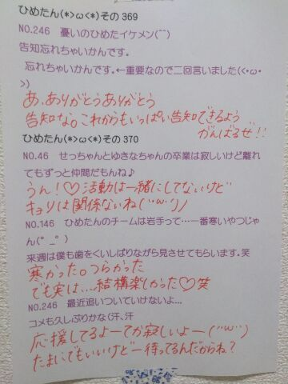
忘れる前に告知☆
NOGIBINGO!2
次の回にひめたん出ますよーヽ(〃∀〃)ノ
いつもたくさんのコメント
ありがとうございます♪
ライブの感想がたくさんあって
いやー楽しんでいただけたみたいなら
本当によかったよかったったー！
ライブは行けなかったよって方も
お誕生日おめでとうしてくれて
ステキなばーすでーでした。
３年目もよろしくねー＊＊
(＊´・ω・＊)
2ND YEAR BIRTHDAY LIVE
無事に終わりました
応援してくださったみなさん
本当にありがとうございました！
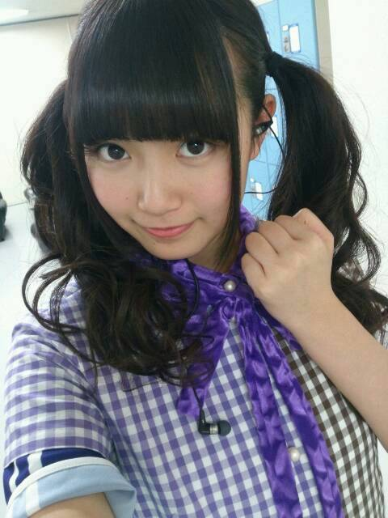
ぐるぐるカーテンの下に
左胸の衣装を仕込んでおります
なんせ55秒着替えだったからな(｀・v・´)どや
約束通り高めくるくるツインしたよー♪
見つけてくれたかな？
ひめたんはねー
ひめきゅんさんのこと
いっぱい見つけちゃったーヽ(〃∀〃)ノ
ひめたんタオルとか、会員証とか！
ひめたんうちわは
昨日はじめて見るのがたくさんあって
もしかして、もしやもしやだけど
今日に合わせて作ってくれたのかなーなーんて
歌いながら勝手に自惚れてたのーんふ
海流の島よ
7人でパフォーマンスしたくて
ずっとうずうずしてた！はじめて叶った！
コウモリよ
はじめてみた方たくさんいらっしゃったと思うの
どうかな？この曲もかわいがっていただけますか？
やさしさとは
360°回転しながら歌ったから
とってもきれいだった！きもちよかった！
ひめたんびーむもできたしねっ
13000人いて何人の方にびーむが届いたんだろう
ずーさん(高山一実ちゃん)ぱぱ褒めてくれたよ♪
私たち乃木坂46にとって
2月22日に行うバースデーライブは
一年に一度の特別なもの。
いつも支えてくださるみなさんへの
恩返しになればなーって思いながら
このライブもまた
たくさんの方に支えられたから
成功できたんだなー......
いつになったらみなさんに恩返しができるのやら
今はまだ頭があがりません。
私たちのお誕生日をお祝いするために
何日も寝ないで
ステキなステージを用意してくださった
スタッフのみなさん
そしてここまで連れてきてくれて
当日も一緒になってライブを作ってくださった
ファンのみなさん
いつもお世話になっているすべての方へ
改めて、本当にありがとうございます
まだまだ乃木坂46頑張ります！
これからもどうぞ
よろしくお願いします＊
16人のプリンシパルtrois
決まりました。
いやー実を言うと結構こわい(´・ω・｀)
でもこうして舞台を用意してくださることは
本当にステキなことだし
楽しみにしてくださってる方がいるなら頑張れます
だから心配しないでねっ
赤坂ACTシアターで待ってるよー♪
そして乃木坂46 Mailはじまりました！
ひめたんからメールが届くよー♪
ちゃんと届いてるかなー？
うん楽しい(っ´ω`c)
私達のこともっともっと知ってほしい、
基本問題集 2年目篇
公式サイトから受験してみてくだされ
Q33、Q75は
サービス問題よ◎
間違えたらおしおきだよー？
そーいやコメント読んでて思ったけど
しばかれたいーとか撃ってーって言って
ひめたんを困らせる人多すぎ(笑)
それじゃおしおきになんないじゃーん！
何だろう。なんて言ったら
みんなたじろぐんだろう......
凍らせるよ！
間違えたひとみーんな
雪だるまにしてやるんだから(ノ)`ω´(ヾ)
どやああ

 最近、髪の毛が長くなってきて
最近、髪の毛が長くなってきて
ワックスをつけてもなかなか
立ちにくくなってきているのですが
良ければベジータが使ってる
ワックスを教えて下さい。ベジータさんがブログをやっていないから
ひめたんに聞くしかなかったんだね
でもね、残念でした！
ひめたんにもわからないものはあるの！
そーねーひめたんも気になるなあ
ベジータさんにどーにかして聞いてみるから(適当)
しばらくいいこして待ってて？
他にも
ひめたんのお口に合わない食べ物はある ？ピーマン、トマト、
お魚類ほとんど、甲殻類全般、
あとわさび！
外国人のひめきゅんはどう思いますか？？？！嬉しいっヽ(〃∀〃)ノ
ようこそきゅんきゅん王国！
みんなで楽しく仲良くしましょー♪
ひめたんの使ってる消しゴムってどんなのー？？消しゴムはデザインよりも機能性やね
MONOをみっつくらい
いっつもペンケースに入れてるよー
ひめたんはカップラーメンに
お湯を入れて食べますか？うん、えーと、うん？
何これひねりとかないよね？
そーですね、お湯を注ぐんだと思いますよ
あんーま食べないけどねー
ひめたんのブログの
コメント欄下２ケタに46を踏んだ方へ
手書きでコメ返するコーナー
＼ ひめたん46 ／
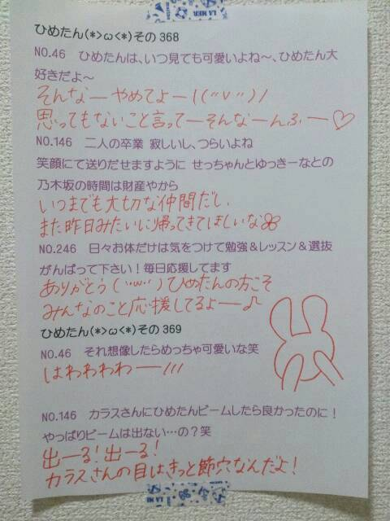
いつもコメントたくさん
ありがとうございます♪
横アリ来てくれた方は
ぜひライブの感想教えてくださいなー
プリンシパルもがんばります！
(＊´・ω・＊)
季刊 乃木坂のメイキング映像が
公開されました！
みてみてー♪
https://www.youtube.com/watch?v=ziYzU9Rxcr4&feature=youtube_gdata_player
とゆーことで
きたる3月5日(日)
季刊 乃木坂vo.1 早春 発売！
メイキング見てくださったら
伝わるかなと思うけど
いつもの制服でも
ぴんくのふりふりでもなく
カジュアルな感じのお洋服よ(ノ)・ω・(ヾ)
景色もきれいだから
ひめたんのことあんま好きじゃないけど
すすきが大好きってんならそれでもいいから
ぜひお手に取ってみてね
よろしくねー♪♪
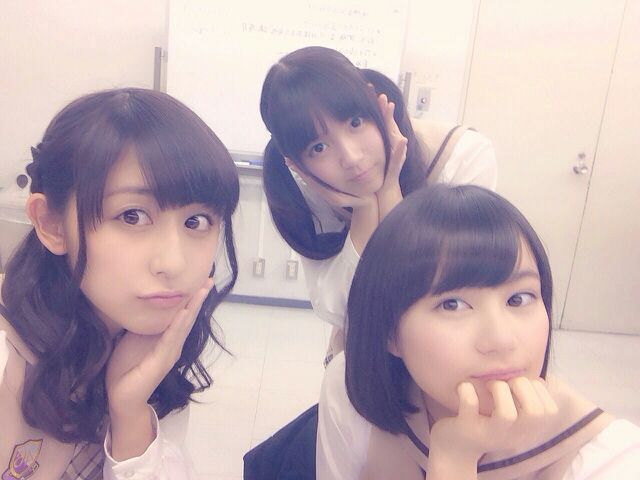
中３組
みーんな17さいになりました中３組。
お誕生日はみんなで
香り違いでお揃いのハンドクリームを
プレゼントしてみました( ^O^ )なかよし！
おーっと
明日はバースデーライブですね！
ヘアはいつもの高めくるくるツインに
しよーかなと思ってます
がんばって見つけてみてね☆
ひめたんもひめきゅんさんのこと
たくさん見つけます(ノ)・ω・(ヾ)
ひめたんTシャツとか着てくれたら
嬉しいなーなんて思ったり思わなかったり。
あっこれよく聞かれるけど
サイリウムはぴんくが好きです！
ひめたん上手か下手のどっちが多い？の答えは
どっちも立つし、言うなら
会場中 全部ちゃんとまわるよー( ^ω^ )ノ
それぞれの曲の
オリジナルのフォーメーションを
思い出していただければなと。
久々に見る曲もあると思うし
最近 乃木坂ちゃんを知ったよって方は
はじめて見る曲も多いかもしれないし
それぞれの楽しみ方ってあると思うけど
こうしてお誕生日に
みんなにお祝いしていただけるなんて
乃木坂ちゃんは幸せです(＊´ω`＊)♪
この1年間 本当に楽しかったよ！
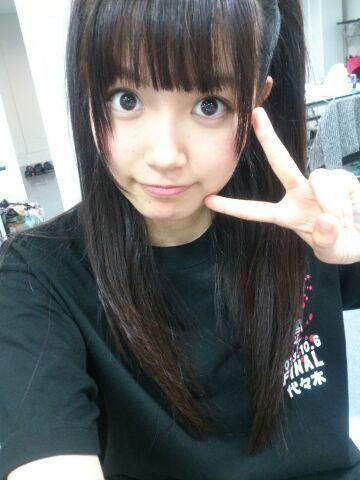
代々木の時の写メ。
ライブTシャツってええですね(ノ)・ω・(ヾ)
はやいなあーもう半年くらい経ったのか......
今日は質問返しおやすみします
ごめんねー
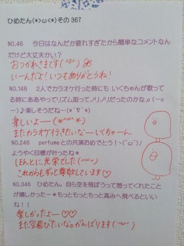
(＊´・ω・＊)
ひめたんくまさん × まなつさんうささん
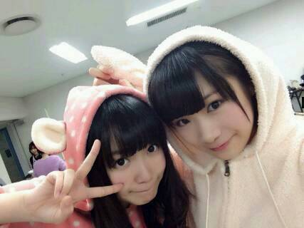
1年に一度のビッグイベント
Birthday Liveが近づいて参りました！
長丁場になりそうだから
体温調節できるような服装できてね◎
おにゃのこのみなさんヒールはつらいかもです
そいでしっかり寝て、しっかりごはん食べて
元気を持ってきてくださいな( ´ ▽ ` )
ねーそーいやさ
前回の質問返しコーナーの中で
ぐるぐるカーテン
やさしさなら間に合ってる
やさしさとは
が好きって言ったじゃーん？
でもねーひめたんね
やさしさとは も好きだけどね
音が出ないギター のがすきかも！笑
だからランキング訂正しといてー(´・ω・｀)
あっもちろん
ユニット曲として歌わせていただいてる
海流の島よ、コウモリよ、やさしさとは には
それぞれ思い出があって特別です＊＊
自分にとって
とってもかわいらしい存在。
なんか日記あげる頻度
ぐだぐだでごめんね(´・_・｀)
最近は撮影やらなんやらかんやらで
乃木坂充しておりますよー
あーなんか考えることがいっぱいで昇天しそう！
生写真「ニット」
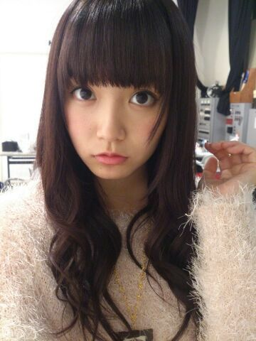
 ひめたんは学校の校則とか
ひめたんは学校の校則とか
ちゃんと守る人ですか？守る人よ( ^O^ )
何だかんだでまじめです
とゆーか破る勇気のないちきんちゃんです←
きゅんきゅん王国の国歌ってどんな感じですか？
多分ハードロックですよね(笑)なんでよ！なんでそーなんのよ
ひめたんだってかあいい歌うたわせてよー(笑)
んえ？歌い声がかわいくないって？
そんなこというのはどのおくちかな(・∀・)
きゅんきゅん王国の王子様や執事は、
倍率が高そうなので、清掃員になりたいです。
時給はいくらですか？ドリーミーでファンシーなきゅんきゅん王国で
お金の話はタブーってことに(´^ω^｀)笑
ここ最近で1番
大量に欲しいと思ったものは何ですか？りんごジュースかな
猛烈にラッパ飲みしたいけど
飽きるんかなーどうなんかな。
中四国の並びが覚えらんないんだけど、
ひめたんは東北とか北関東は
どこが何県とかちゃんと言える？ひめたん地理は強いんだよー！
言える自信はありますよヽ(・ｗ・)ノ
たぶんねたぶんねたぶ、んね
ひめたんのブログの
コメント欄下２ケタに46を踏んだ方へ
手書きでコメ返するコーナー
＼ ひめたん46 ／
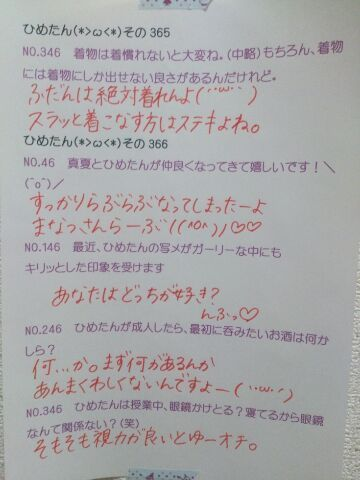
いつもコメントたくさん
ありがとうございます！
そうそう、乃木どこのバレンタイン企画
ひめたんなら誰にあげるー？って質問が
非常に多かったからサクッとお答えしよーかなー
うーん......
誰だろう誰だろう。
いくちゃんはいつもお世話になってるし、
わかつきはあたしの旦那さんだし......
(＊´・ω・＊)
みなさん昨日の雪は大丈夫でしたか？
ひめたんは首都圏の方しか
様子がわからないけど
こっちはすんごいことになっておりました( >_< )
広島で育ったひめたんは
きれいな雪しか知らなかったけど
いやあ自然って時に恐ろしい。
そんな中 昨日は撮影でしたっ
１日スタジオの中で過ごしてたから
外の状況が全然わからなくて
終わって外出てもう唖然(゜д゜)
高速道路は通行止めになってたけど
それでもなんとか無事帰ってきたよー＊
ご近所さんたちが
雪かきして道を作ってくださってて
ほっこりしました。
全国の雪かきした方
みんなの安全のためにありがとう！
撮影の方は情報解禁をお楽しみにー♪
そだ！はぴーばれんたいーん

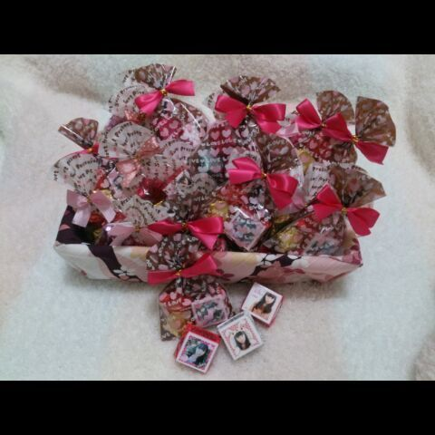
まっしろなハートをお持ちのひめきゅんさんなら
街中にひめたんからの愛のチョコが舞いすぎて
前が見えないなんてことになってたと思います！
リボンタイの一部は
ままの手作りなんだよー♪♪
何？見つけてない......だと？
あいにくのお天気でしたが
みなさんバレンタインは
いかがお過ごしでしたかー？
女子高のバレンタインが楽しいとはよく聞くけど
乃木坂ちゃんのバレンタインも楽しいよ！
はやくみんなで集まりたいなー( ´ ▽ ` )
予防接種。
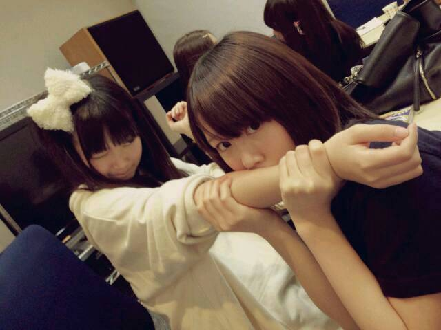
みなさんもインフルエンザにはご注意を！
そーいやNOGIBINGO!2
告知してませんでした(´・・｀)ごめんぬ
昨日は２期生ちゃんとのリベンジバトル
後編でございましたー
よしりんお疲れ様でございました♪
次にひめたん出るのは再来週かなー
季刊 乃木坂vo.1早春
3月5日(日)発売！
ひめたんも載せていただいております♪
是非チェックしてみてください(〃ω〃)
生写真も当ててねーっ

 彼女からのチョコより、
彼女からのチョコより、
ひめたんからのひめたんびーむがほしい！
だめかな？？
(もしびーむをくれたら、お返しにリボンを......)大人はズルいですね！
そーやって釣るんだからまったくーって、へ？
りぼん......だと？んっごほっ
そんなーあげるに決まってるじゃーん(＊^O^＊)
お返しは別にいいんだよ？
お返しとか、ましてりぼんとか、別にいらな......
ひめたんは
ショートケーキどこから食べる？いちごからかなー
あのねーひめたんねーショートケーキのいちごは
あんまーし好きじゃないんだよね(´・ω・｀)
ショートケーキのいちごは
わざとすっぱいやつ使うって知ってたー？
ちなみに泥棒と警察？おにごっこの日の記事 この質問多かった！
ひめたんは「ケイドロ」派でした
東京きたら「ドロケイ」派も結構いてびっくり。
ひめたんは家でもふわふわした格好してるん？
個人的にはひめたんは家だと
ジャージとかスウェットだったら良いなと思ってるごめんねー裏切ります(´・ω・｀)
ぴんくのもこもこルームウェア◎
ひめたんは大きい女の子、どう思いますか??ステキだと思います＊＊
手足が長くてすらーっとしてるおにゃのこ憧れる！
ひめたん160センチは欲しかったんだー
なんてゆか、ひめたんね
背が高くもなくて低くもなくて
いっちゃん中途半端なんだー
だから自信持って♪ね
乃木坂の曲のなかで
特に思い入れのある曲はなんですか？思い入れのある曲......となると
「狼に口笛を」かなあ
基本的に自分の参加したアンダー曲は
しょっぱい思い出ばかり(´・_・｀)
鳥取県っていういなかの者だけど
ひめたんのファンになれますか？
スタバがないんです。゜(゜´Д`゜)゜。ああ泣かないで！
大丈夫。おうちの近くに
スタバがあってもなくても関係ないよ！
ありがとーうね∩^ω^∩
ちなみにひめたんは最近スタバ行ってないー
今度全曲ライブをやるということで、
ひめたんの乃木坂の曲でのランキング
教えてー！！(最新版)ぐるぐるカーテン
やさしさなら間に合ってる
やさしさとは
ちなみに１位２位は歌ってないです(笑)
 ひめたんはやっぱりりぼんちゃん派？
ひめたんはやっぱりりぼんちゃん派？りぼんちゃん好きだったよー( ´ω` )
あとはちび丸ちゃん、じゃじゃハムちゃんも
好きだったよー＊＊
ひめたんのブログの
コメント欄下２ケタに46を踏んだ方へ
手書きでコメ返するコーナー
＼ ひめたん46 ／
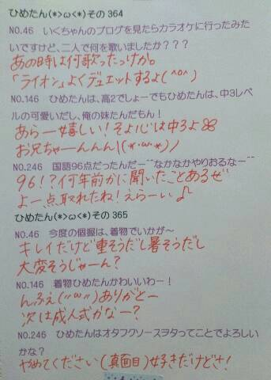
いつもたくさんコメント
ありがとうございます
ひめたんのチョコをげっとしようと
お外でおくちあけて待っていたみなさん
風邪引かなかったですかー(´；；｀)？
ひとつだけ言っておきたいことがあるの
あのね、あの大雪は
ひめたんが降らせたんじゃないからね？
こんな時に
うちの暖房が調子悪いのヽ(；▽；)ノ
「もー全然動かないなんなの！」って言うとままに
「そーやって悪口言うからよー」と
ままに怒られてしまいました
とゆーことで絶賛 暖房さんをなだめ中です。
まだ寝てるのー？ねー元気だしてお願ーい

って
暖房さんに向かって話しかけ続けてる私
もうすぐ高校３年生。
(＊´・ω・＊)